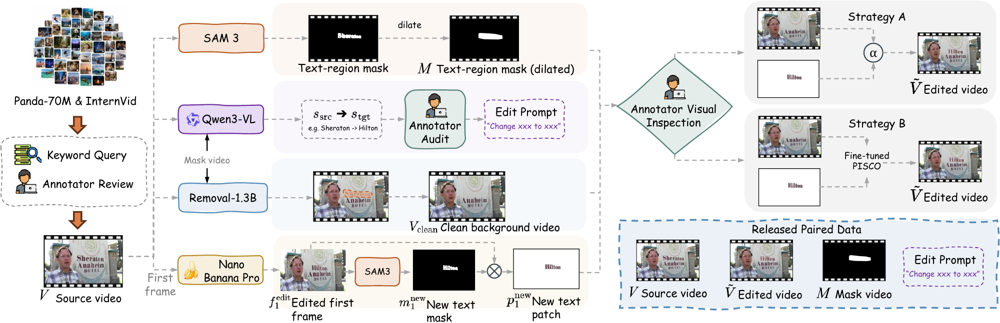
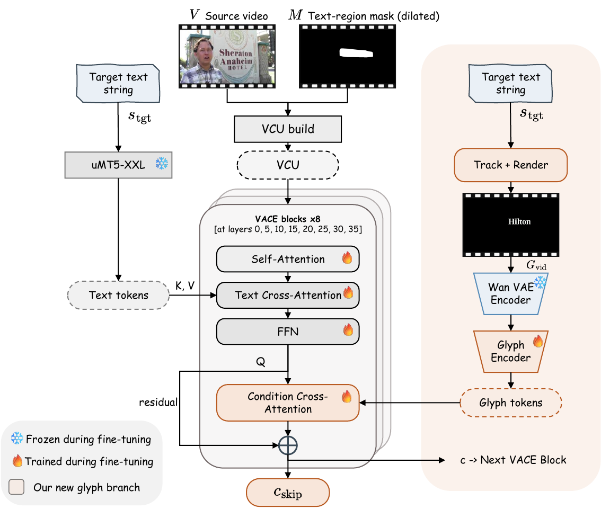

ViTeX-Bench: Benchmarking High Fidelity Video Scene Text Editing
Abstract
Video scene text editing aims to replace text appearing on scene surfaces in a video, such as storefront signs, whiteboards, and product labels, while preserving the surrounding content, motion, and camera dynamics. Although scene text editing has been extensively studied for still images, its video counterpart remains underdeveloped. Existing resources do not provide paired edits over real-world videos, current protocols rarely measure whether the edited region reads as the target string over time, and there is no large-scale open-source benchmark for systematic comparison. To close these gaps, we introduce ViTeX-Bench, a comprehensive benchmark suite for high-fidelity and temporally consistent video scene text editing. Specifically, we first built ViTeX-Dataset, containing 387 real-world 720p videos with precise text-region masks and editing instructions; the 230-clip training split provides the first such resource with paired editing results built through a semi-automatic pipeline, with the rest forming the evaluation set for standardized benchmarking. In ViTeX-Bench, we propose a three-axis evaluation protocol — text correctness, visual quality, and edit locality — totalling 13 metrics that combine character-level OCR signals with motion and preservation metrics. Our benchmarking experiments indicate that all eight leading video editing models, both public and commercial, fail in distinct ways: they either flicker or drift over time, or simply fail to produce the requested editing effects. To further validate the efficacy of our proposed dataset, we trained ViTeX-Edit-14B on the paired training split with a motion-aligned glyph-video conditioning stream. We show that, trained on only 230 high-quality paired videos, ViTeX-Edit-14B achieves the strongest CharAcc among video-native editors (0.688, +11.1% over VideoPainter) and leads three ranked temporal metrics, reducing the previous best by 2.1% (Flickerf), 6.6% (Flickerc), and 1.9% (Warpc), respectively.
A coordinated three-part release
Our contributions, paraphrased from the paper introduction.
ViTeX-Dataset
The first paired real-video resource for video scene text editing, releasing both a training split with paired edited references and an evaluation split. It closes the paired-data gap left open by image-only datasets and by STRIVE, which only have synthetic paired data and unpaired real-world data.
ViTeX-Bench
A task-specific evaluation protocol that scores character-level correctness, temporal visual quality, and edit locality on three complementary axes, released with a cross-family reference grid covering all four practical strategies.
ViTeX-Edit-14B
An open-source reference editor that augments Wan2.1-VACE-14B with a glyph-video conditioning pathway for target-character identity and source-aligned motion. We fine-tune it on the ViTeX-Dataset training split and release the trained weights as a reproducible baseline for the public leaderboard.
ViTeX-Dataset construction
A semi-automatic pipeline turns a curated 387-clip pool into paired training tuples.

Evaluation protocol
Three orthogonal axes, thirteen complementary metrics, the vector is the unit of report.
Each method is reported as a thirteen-metric vector along three
orthogonal axes. No cross-axis aggregate is published, because no axis substitutes for another:
a method with the wrong characters is not redeemed by visual quality, and a method that re-renders
the entire scene is not redeemed by text accuracy. Two methods with similar overall numbers can
differ on which axis they fail.
For ranking purposes only, the public leaderboard sorts on
TextScore = ∛(SeqAcc · CharAcc · TTS) — the geometric
mean of the three text-correctness primitives. SeqAcc = 0 collapses TextScore to zero, the intended
semantics for methods that never produce the requested target string. The remaining ten primitives
appear next to TextScore on every leaderboard row, so the full vector is always visible.
Public leaderboard
Ranked by TextScore, the geometric mean of the three text-correctness primitives. Click any column header to re-sort by that metric.
| Method | Fam | Src | TextScore ↑ | SeqAcc ↑ | CharAcc ↑ | TTS ↑ | Flk_f ↓ | Flk_c ↓ | Wp_f ↓ | Wp_c ↓ | MUSIQ_f ↑ | MUSIQ_c ↑ | PSNR ↑ | SSIM ↑ | LPIPS ↓ | DSim ↓ | |
|---|---|---|---|---|---|---|---|---|---|---|---|---|---|---|---|---|---|
| 1 | TextCtrl | A | Admin | 0.5624 | 0.475 | 0.733 | 0.511 | 3.80 | 4.29 | 1.59 | 2.09 | 70.32 | 42.77 | 41.14 | 0.994 | 0.008 | 0.004 |
| 2 | ViTeX-Edit-14B (Composite) | ours | Admin | 0.5410 | 0.345 | 0.689 | 0.666 | 3.73 | 3.83 | 1.51 | 1.56 | 70.27 | 44.94 | 42.95 | 0.992 | 0.006 | 0.002 |
| 3 | ViTeX-Edit-14B | ours | Admin | 0.5338 | 0.341 | 0.688 | 0.648 | 3.27 | 3.42 | 1.55 | 1.53 | 69.64 | 43.53 | 29.08 | 0.951 | 0.060 | 0.024 |
| 4 | VideoPainter† | C | Admin | 0.5151 | 0.365 | 0.619 | 0.606 | 2.38† | 2.62† | 2.93† | 3.35† | 67.16 | 40.59 | 28.56 | 0.915 | 0.104 | 0.024 |
| 5 | FLUX-Text | A | Admin | 0.5023 | 0.528 | 0.737 | 0.326 | 5.11 | 14.81 | 3.03 | 13.01 | 70.26 | 43.85 | 31.49 | 0.975 | 0.029 | 0.012 |
| 6 | RS-STE | A | Admin | 0.4908 | 0.354 | 0.626 | 0.534 | 3.73 | 3.66 | 1.61 | 1.81 | 69.57 | 34.26 | 37.00 | 0.983 | 0.024 | 0.007 |
| 7 | AnyText2 | A | Admin | 0.4074 | 0.280 | 0.633 | 0.382 | 3.34 | 4.95 | 2.04 | 3.95 | 66.68 | 41.65 | 25.56 | 0.905 | 0.092 | 0.043 |
| 8 | TextCtrl + AnyV2V | B | Admin | 0.1649 | 0.057 | 0.308 | 0.257 | 4.98 | 4.98 | 4.11 | 3.97 | 69.41 | 33.85 | 21.08 | 0.785 | 0.225 | 0.073 |
| — | Identity (sanity) | — | Admin | 0.0000 | 0.000 | 0.317 | 0.760 | 3.72 | 3.68 | 1.46 | 1.27 | 70.33 | 45.12 | 100.00 | 1.000 | 0.000 | 0.000 |
| — | Wan2.1-VACE-14B | C | Admin | 0.0000 | 0.000 | 0.298 | 0.690 | 3.78 | 3.84 | 1.69 | 1.56 | 70.54 | 45.26 | 35.21 | 0.976 | 0.022 | 0.007 |
| — | Kling Video 3.0 Omni | D | Admin | 0.0000 | 0.000 | 0.208 | 0.641 | 4.25 | 4.08 | 3.12 | 2.90 | 72.23 | 47.75 | 21.18 | 0.843 | 0.176 | 0.061 |
ViTeX-Edit-14B: open reference model
Wan2.1-VACE-14B extended with a glyph-video conditioning pathway, fine-tuned on the 230-clip training split.

Why three axes, jointly
Four diagnosed baseline failures, one per method family. Each is invisible from a single visual impression or a single metric column, and each is recovered by a specific axis or pair of axes.
TTS alone is not an editing-quality indicator
Wan2.1-VACE-14B (zero-shot) targetNEW → OLD
The instruction is to change NEW to OLD, but Wan2.1-VACE leaves the masked
region essentially unchanged from the source — the rendered text still reads NEW.
TTS is high (consecutive frames decode to the same string) and the source-faithful PSNR is also high,
so a benchmark that relied on temporal stability or pixel-level fidelity alone would score this
favorably. SeqAcc = 0 on this clip surfaces the failure: the model never produced the
requested target.
Per-frame editors cannot win correctness and temporal stability simultaneously
FLUX-TextFamily-A methods take the SeqAcc and CharAcc lead because each frame is edited by a strong static scene-text editor, but the same frame-independence that yields character precision removes any temporal coupling. FLUX-Text registers near-correct characters on individual frames yet cycles through different glyph shapes between frames, so high SeqAcc / CharAcc co-occur with low TTS and an extreme Flickerc spike — a structural property of per-frame editing rather than a tunable defect.
High visual quality is not correctness
Kling Video 3.0 Omni targetSOC → COC, edited as ZOO
ZOO instead of COC
Kling produces a high-quality clip — both MUSIQ axes lead the table — but the rendered glyphs spell
ZOO rather than the requested target COC. A benchmark that aggregated visual
quality without conditioning on correctness would put Kling at the top of the leaderboard; the
three-axis structure of ViTeX-Bench makes this divergence explicit.
First-frame propagation collapses correctness and locality together
TextCtrl + AnyV2VTextCtrl on its own reaches strong SeqAcc with near-perfect locality. Pairing it with AnyV2V to lift that per-frame edit into a video drops SeqAcc by an order of magnitude and produces the worst PSNR / SSIM / LPIPS in the table simultaneously: as the propagation drifts away from the first-frame edit, the unmasked scene drifts with it and the rendered text loses temporal stability. Reporting either correctness or locality in isolation would mask half of the regression.
BibTeX
@misc{vitexbench2026,
title = {ViTeX-Bench: Benchmarking High Fidelity Video Scene Text Editing},
author = {Anonymous},
year = {2026},
note = {Submitted to NeurIPS 2026 Track on Evaluations and Datasets.
Author list and DOI updated after deanonymization.},
url = {https://vitex-bench.github.io/}
}